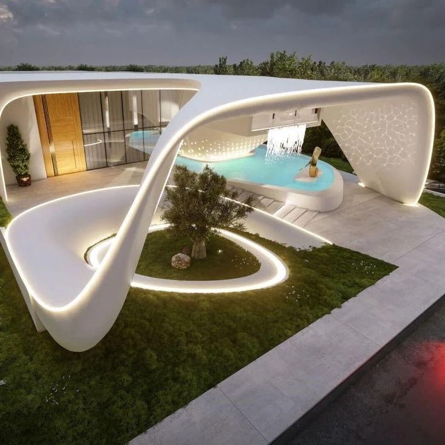
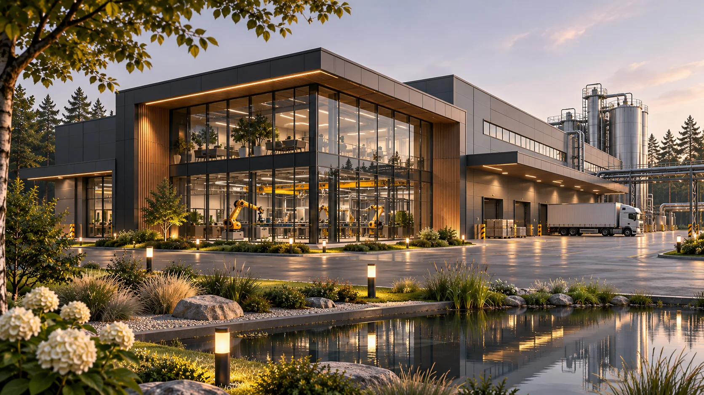
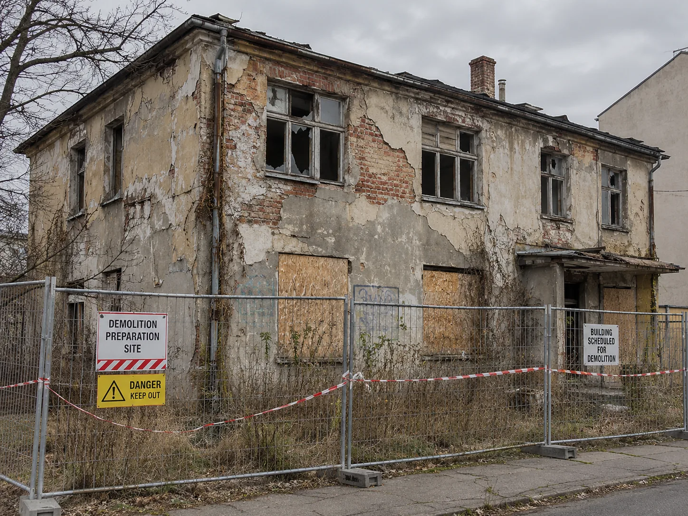
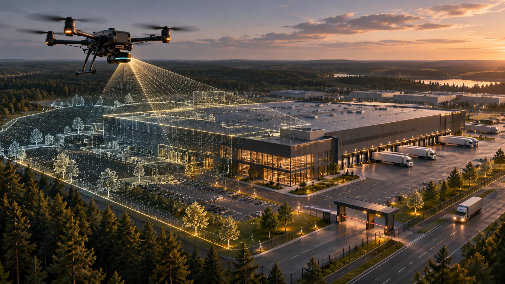
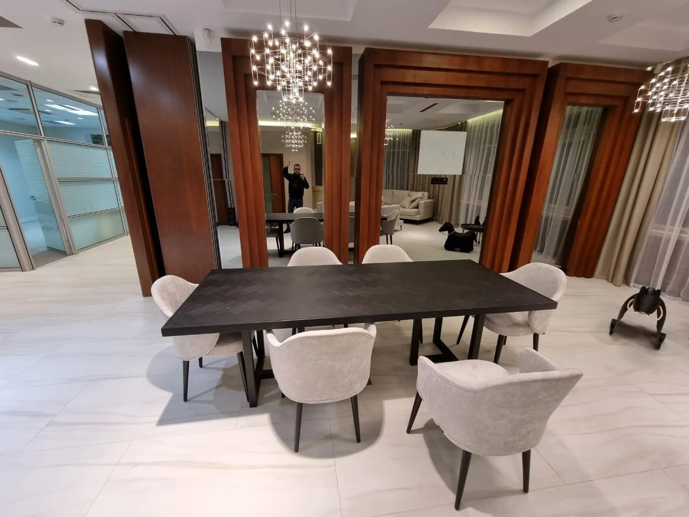

КОНСОРЦИУМ «МОСПРОМСТРОЙ»
Вместе мы создаём то, что меняет мир!
Консорциум «МосПромСтрой» объединяет компетенции строительных, проектных, инженерных, инжиниринговых и производственных компаний для реализации совместных проектов и развития территорий России. Расскажите о задаче — начнём с предметного разговора.
ТЕРРИТОРИИ · СООБЩЕСТВО · КООПЕРАЦИЯ · СОЗИДАНИЕ
Будущее, в котором хочется жить.
Концепция сети современных поселений, объединяющая преимущества города, возможности сельских территорий и силу сообщества.
Международный потребительский кооператив социальных инициатив «ТройкаГрад»
Познакомиться с концепцией и участниками
АРХИТЕКТУРНАЯ КОНЦЕПЦИЯАРХИТЕКТУРА И СРЕДА
Пространства, которые хочется создавать.
Индивидуальная архитектура, продуманная инженерия и внимание к жизни людей — от первого замысла до обсуждения реализации.
Исследовать «Дом твоей мечты» ↗Направления взаимодействия
От строительства и инженерных измерений до снабжения и дизайна — выбирайте профиль задачи.

01 / СТРОИТЕЛЬСТВОСтроительствоДома, промышленные, коммерческие и быстровозводимые здания
02 / ПОДГОТОВКА И ОБЕСПЕЧЕНИЕПодготовка и обеспечениеДемонтаж, бетон, поставки и комплектация
03 / ПРОЕКТИРОВАНИЕПроектирование и визуализация3D-сканирование, геодезия, инженерные и инжиниринговые решения, макеты
04 / ДИЗАЙНДизайн помещенийЧастные и коммерческие интерьерыСОТРУДНИЧЕСТВО
От запроса до договора — понятные этапы
Простой маршрут от первого разговора к согласованному формату работы.
Разбираемся в задаче
Вы рассказываете о назначении объекта, площадке, сроках и исходных данных.
Готовим решение
Определяем состав работ, необходимые компетенции и следующий этап подготовки предложения.
Согласуем договор
Согласуем состав работ, этапы, цену, сроки и ответственность в договоре.
СЛЕДУЮЩИЙ ШАГ
Начнём с вашей задачи.
Кратко опишите задачу — подскажем, какие данные нужны для следующего шага. Для первого обращения достаточно нескольких фактов об объекте.